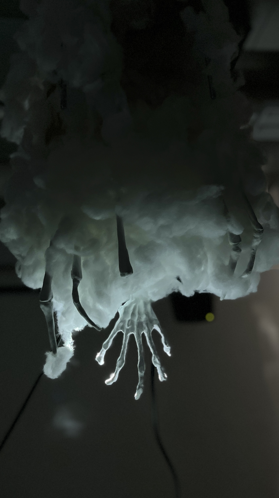

UFO Abduction
2023

ArduinoとProcessingを用いたインタラクティブインスタレーション
UFOによる誘拐をモチーフに、ArduinoとProcessingを活用したインタラクティブなインスタレーションをチームで制作しました。
モーターを搭載したミニカーにセンサーを取り付け、車の動きに連動して天井に設置したプロジェクターの光が追従する仕組みを構築しました。UFOが地上を走る車を発見し、光を照射しながら追いかける様子を、実際の空間の中で表現しています。
また、車が走行する地面をジオラマとして制作し、両側にドライアイスを配置することで、霧が立ち込める不気味な夜明けの風景を演出しました。光の動きと立体的な展示空間を組み合わせることで、UFOが車を追跡する光の軌跡を可視化し、鑑賞者がその場に起きている出来事を臨場感をもって体験できる作品を目指しました。